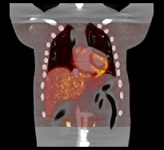

Contact: Carole Lartizien, Joachim Tabary.
Total CPU time: 12.8 hours. Best execution time in VIP: 1.9 hours.
A whole-body CT acquisition was simulated using Sindbad. The anatomical model was constructed from the XCAT phantom which was fitted to a specific patient anatomy. In addition to the main organs, XCAT includes the vessels and the airway tree which are necessary for high resolution simulations such as CT. The simulation was xclusively analytical although SINDBAD also has a Monte-Carlo mode. The scanner model was a simplified version of the Philips Scanner (Philips MX8000) which is the CT component of the PET/CT GEMINI scanner. We assumed a point source located at 0.75m from the center of the thorax (also considered as the rotation axis of the CT system) and at 1.2m from the plane detector. We used a cone-beam geometry and a standard X-ray energy spectrum with a tube voltage of 110kVp and an aluminium filter of 2.5mm. The typical values for intensities and scanner rotation length corresponded to a very low-dose acquisition (resp. 1mA and 0.5s). The detector was a planar matrix of 800x800 pixels of ideal absorber with an isotropic pixel size of 2mm. The accuracy of the CT voxel model was chosen coherently with the detector resolution (500x500x689 volume with a isotropic voxel size of 1 mm). A set of 480 projections were reconstructed with a Feldkamp cone-beam reconstruction algorithm resulting in a 450x450x450 matrix with an isotropic pixel size of 1mm.
| |
|  |